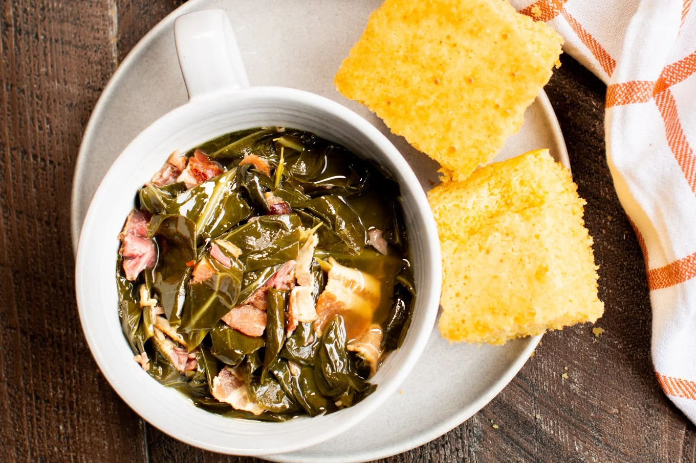

Collard Greens (Crockpot Recipe)

This is an absolutely delicious and easy way to prepare a big batch of collard greens.
It cooks in a crock pot, making it fast and simple. The taste is out of this world - sweet, tangy, smoky and savory.
I don't mind canned greens, but it's hard to go back after having these!
Ingredients
- 8 cups raw collard greens (2 large bunches)
- Ham hocks (2)
- Bacon (1 lb)
- Brown sugar (1 tbsp)/li>
- Chicken broth (3 cups)
- Salt
- Pepper
- Red pepper flakes (1/4 tsp)
- Apple cider vinegar (2 tbsp)
Steps
- Cook bacon. Reserve 2-3 tablespoons of the fat.
- Wash greens thoroughly. Remove center "ribs" and tear leaves into bite sized chunks. Greens don't reduce as much during cooking as cabbage or spinach.
- Add greens to slow cooker with ham hocks.
- Add cooked bacon, bacon fat, brown sugar, chicken stock, apple cider vinegar, salt, pepper and red pepper flakes.
- Cover slow cooker and cook on high for 4 hours or low for 7.
- Remove ham hocks and shred meat into greens. Stir.
- Serve with the broth in bowls. Delicious with corn bread and any rich dish.
Home